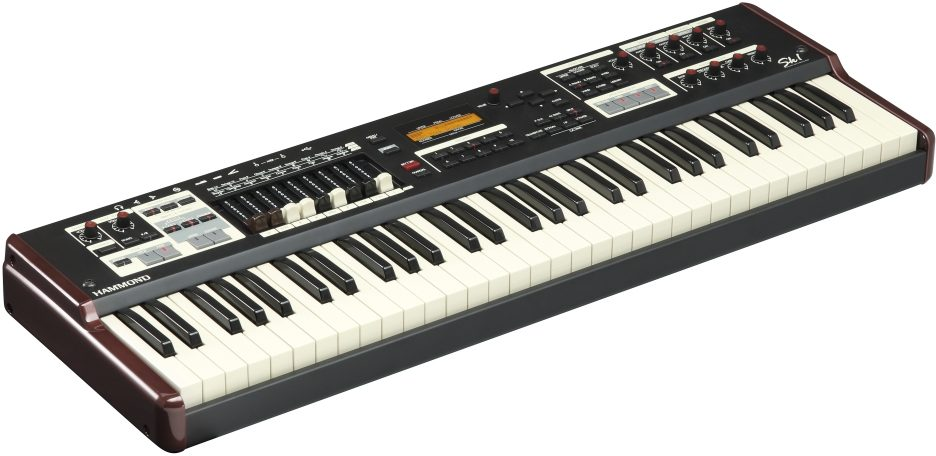

By Joss Gantley May 25th 2019
I've been in rock bands as a keyboard player for a while. I used to just use different presets on my digital piano to swap from piano to organ, but then I decided I wanted to get a second keyboard that would give me a better organ sound. Being that I'm in a classic rock band currently, I needed a better organ sound. So I bought a 2 tier stand and started researching the best digital organs on the market. It may not be the cheapest digital organ out there, but if you want a keyboard that can capture the classic organ sounds, the Hammond SK1 Organ is the way to go.
I have the 61 key version of the SK1, but this little keyboard looks like it means business. This is because all of the functionality of this organ is laid out right in front of you. You can see all the knobs and buttons for the various settings right there. I also like the glossy maroon sides and the off white keys that give it that vintage look. It's extremely light at 15lbs! I would definitely recommend getting a case for this keyboard if you are going to be gigging with it, because of all of the knobs and sliders it has.
This organ is extremely easy to use and comprehend. The chorus, vibrato, reverb, overdrive, EQ settings, Leslie settings, percussion settings and presets, are all at your fingertips. I like that Hammond has stayed with the actual physical sliders for the drawbars. The new Vox Continental organ has this touch sensitive kind of pad for the drawbars. It may look cool but I can imagine it would very difficult to adjust those drawbars quickly when you need to! You also have the option to split or layer with an extra voice which has an adjustable volume nob right on the board. To set the split point you can just hold the split button and press whichever key you want it to split at. You can also easily adjust the octave you want to play with up/down buttons which I find very handy being that it is a smaller keyboard.
The main reason to buy this organ is the fact that it's a Hammond and it sounds just like the real thing, and you don't have to haul a 400lb Hammond B3 around to get that authentic sound and functionality. The digital Leslie is amazing and easy to adjust. You can even plug in a real Leslie speaker if you want via the 8 pin jack. You build your own organ sound from scratch or use the presets that it comes with. It has a lot of the iconic organ sounds already laid out in the list of voices. I remember showing up to band practice with it and I was scrolling through all the sounds. I came across a voice titled "Some Lovin" and it sounds exactly like the heavily distorted organ form "Gimme Some Lovin" by The Spencer Davis Group. The bassist in our band started playing the riff as soon as I played the sound, and we had a bit of a jam even though we don't know the song! There lots of cool sounds like that which is nice because it makes it effortless when it comes to cover gigs. But it also gives you the option to tweak these sounds to your own liking. And its not just organ sounds, there's some vintage piano, EP, and synth sounds as well. There is also a USB drive where you can load additional sounds to the organ.
Being that this organ is MIDI capable with in/out jacks, you can connect another keyboard and use it like the lower keyboard level on an actual electric organ which is pretty cool. They really thought of everything to make this organ as true to the real thing as possible. It also has 3 inputs for pedals, (expression, foot-switch and damper). Another thing I really like is that you can save your 10 favourite voices as presets to 10 buttons that are located right in the middle of the keyboard which is very handy. There are also user voices that you can write your own voices to as well.
All in all I'm delighted with this keyboard, and it's definitely worth it. The ability to carry around the authentic sound and functionality of a real Hammond organ in a 15 lb package is truly magnificent. It does everything I expected it to do, and more! I really love how it has some of those iconic sounds from specific songs already loaded. You can get a 61 key Hammond SK1 on Zzounds for $1895.00 which is awesome considering what I paid for it in Canada! I hope you enjoyed my Hammond SK1 organ review.